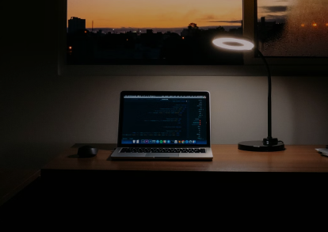

July 23, 2022
My journey as a Blogger.
After several years of wanting to become a blogger, I decided to take a leap of faith. Taking a shot at my dream was the decision I've ever made.
How I stay committed to learning
After several years of wanting to become a blogger, I decided to take a leap of faith. Taking a shot at my dream was the decision I've ever made.
How I got started
After several years of wanting to become a blogger, I decided to take a leap of faith. Taking a shot at my dream was the decision I've ever made.